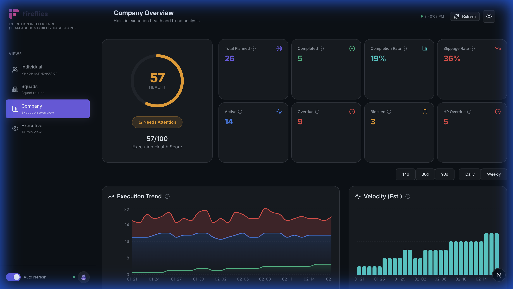
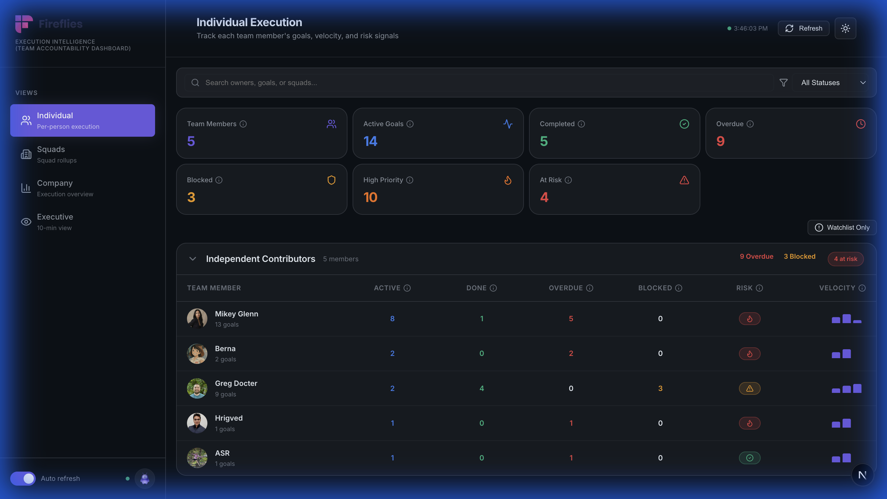
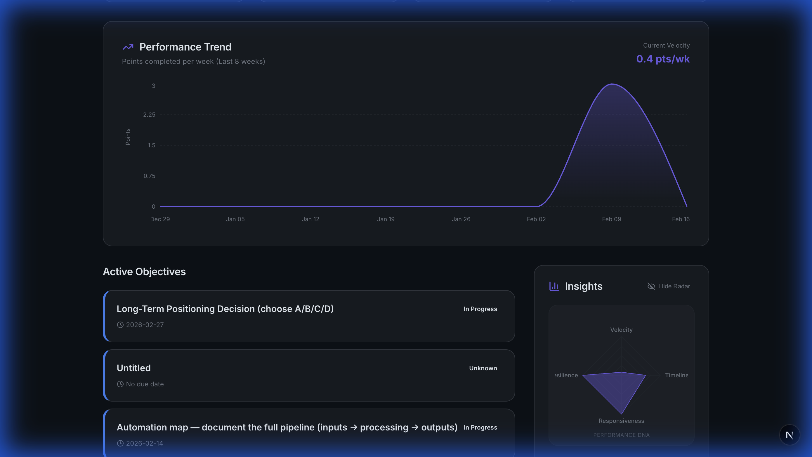
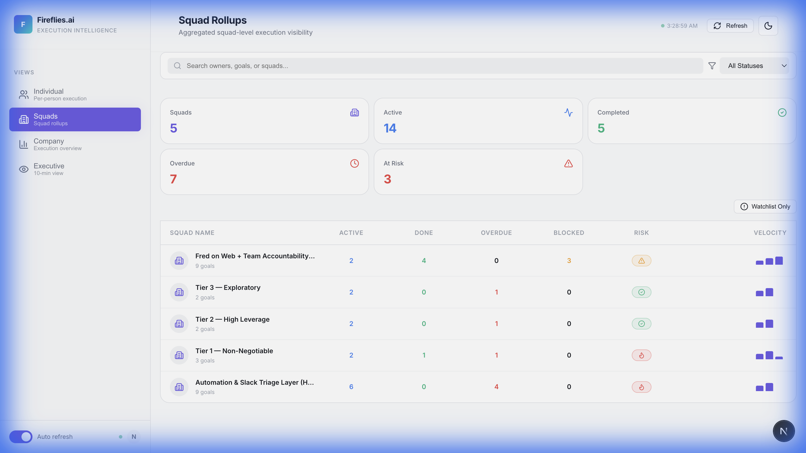
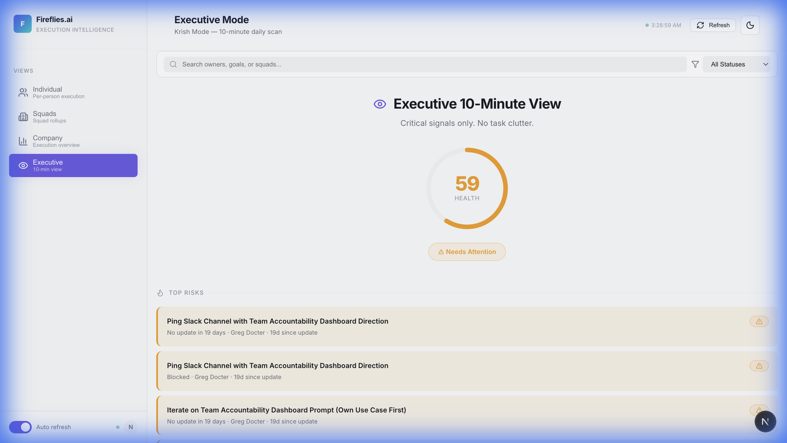

Executive Pitch: Aligning Notion with Krish's Q1 Vision
This guide is structured to help you pitch the dashboard by showing how every UI element is a
direct response to Krish's objectives.
1. The Strategy: "Vision Visualization"
Before diving into the features, here is the high-level mapping of how every technical decision was a response to
a specific leadership goal:
| Krish's Goal |
Dashboard Implementation |
| Scaling without 1:1s |
Drill-down logic: Saves Krish 20 mins of digging by jumping directly from KPIs to
stuck work. Now supported by Clean URL Slugs for easy sharing. |
| Individual Accountability |
Personal Command Centers: Every owner now has a rich profile with
Historical Performance Trends and the Accountability Radar (Risk
DNA).
|
| Signal Clarity |
Risk Suppression: Completed work is automatically stripped of risk flags to reduce
dashboard noise. |
| Focus on Trends |
Metric Charting: Auto-generated Deltas, Area Charts, and Interactive
Toggles (14/30/90 days) for flexible time-horizon analysis. |
| Signal Clarity |
Risk Suppression: "Green" status work is automatically noise-filtered, and
Logic Tooltips explain exactly how health scores are derived.
|
| Unblocking at Scale |
Watchlist Toggle: One click to hide healthy work and instantly find the hidden
fires. |
| One Source of Truth |
Visual Layer: Zero new tools. Transparently sits on top of existing Notion data.
|
2. Key Alignment Snapshot (Goal → Solution)
Krish's Goal: "Scaling Leadership without 1:1s"
What I Did: Built the Executive Drill-down.
- Why: Krish can click "Overdue" and instantly see who is stuck, preventing 20 minutes of digging.
Krish's Goal: "Individual Accountability"
What I Did: Built the Intelligence Console.
- Why: Replaced bulky cards with high-density grids and Velocity Sparklines to detect performance
drops early.
Krish's Goal: "Focus on Trends/Deltas"
What I Did: built Metric Trend Charting.
- Why: Every metric now shows a delta arrows and 4-week history, so we track movement, not just
static status.
Krish's Goal: "Unblocking at Scale"
What I Did: Built requested Watchlist & Interactive Controls.
- Why: One click hides "Green" status. New 14/90-day toggles allow Krish to switch from "Daily
Firefighting" to "Quarterly Strategy" instantly.
Krish's Goal: "Signal Transparency"
What I Did: Built Metric Logic Tooltips.
- Why: Hovering over any metric (like "Health Score" or "Slippage") now shows the exact math,
removing the "black box" feel from the algorithms.
Krish's Goal: "One Source of Truth"
What I Did: Built a Visual Layer on Notion.
- Why: Zero new tools. Zero new forms. We respect Greg's existing data structure.
Krish's Goal: "Signal-to-Noise Ratio"
What I Did: Refined Overdue vs Completed Logic.
- Why: Finished work no longer triggers "At Risk" signals. We only yell about things that still need
attention.
3. Feature-by-Feature Walkthrough (Stranger-Friendly)
This section breaks down every view for someone who has never seen the dashboard before,
explaining exactly what they are looking at, where the data comes from, and why it matters.
A. The Company Pulse (Company View)
This is the "10-second health check" for the CEO and leadership.

1. Execution Trend (Interactive Area Chart)
- What: A visualization of output with 14/30/90-day toggles and
Daily/Weekly granularity.
- Where: Pulled from the
Last Updated and Status timestamps in
Notion.
- Why: To answer, "Are we accelerating or slowing down?" Now supports
Horizontal Scrolling, allowing high-density data review without breaking the layout.
2. The Health Score & Logic Tooltips
- What: An algorithmic score (0-100) with a hover-to-see-logic tooltip.
- Where: Calculated in real-time based on overdue items, slippage rate, and update recency.
- Why: To provide Transparency. Leadership can now see exactly why a score
is
"Amber" vs "Red" by hovering over the metric.
B. The Intelligence Console (Individual View)
This is the high-density cockpit for Operations, HR, and Team Leads.

4. Clean URL Architecture (Slugs)
- What: Every filter and view is now addressable via the URL (e.g.,
/individual?status=blocked).
- Why: Enables "Deep Linking". The Ops team can send a specific filtered
view to a squad lead, and they see exactly what Krish sees, instantly.
6. Real Performance Sparklines
- What: A small bar chart next to every person's name showing their real output (effort
points) over the last 4
weeks.
- Where: Aggregated from tasks marked
Done in Notion, using actual
Effort Points.
- Why: Replaces "Black Box" metrics with Proven Throughput. If a "Top
Performer" suddenly has
empty bars, HR knows to check in before the quarterly review.
C. Personal Command Centers (Profile Pages)
The deep-dive view for individual coaching and growth.

7. Historical Velocity (Trend Chart)
- What: An area chart showing point completion trends over the last 8 weeks.
- Why: To visualize momentum. It answers: "Is this person getting faster
or slower as the quarter progresses?"
8. Risk DNA (Accountability Radar)
- What: A 4-axis radar chart breaking down performance into Velocity, Timeliness,
Responsiveness, and Resilience.
- Where: Located in the Insights card on individual profiles.
- Why: To move beyond a single "Accountability Score." We've included a **Toggle** to this
view,
allowing managers to show or hide high-resolution "DNA" depending on the coaching context.
9. Bio & Current Focus
- What: Professional context pulled directly from the Team Directory.
- Why: Provides the "Human Layer" to the data. Fred uses this context to
tailor its advice to that specific person's role.
D. The Squad Rollup (Squads View)
This view answers: "Which team is struggling?"

6. Ownership Clarity %
- What: The percentage of a squad's goals that are assigned to a specific person vs.
"Unassigned."
- Where: Calculated by checking the
Owner property in Notion for every active
task.
- Why: To enforce the "Direct Responsible Individual" (DRI) model. If
clarity is below 80%, the squad has too much ambiguous work.
D. The Executive Scan (Krish Mode)
A stripped-down view for the 10-minute daily review.

7. Top 5 Risks
- What: The 5 most critical items in the company (High Priority + Overdue/Blocked).
- Why: To give the CEO a prioritized "hit list" for unblocking.
8. The FRED Assistant (Interactive Logo)
- What: The animated 3D assistant icon in the sidebar footer.
- Why: Provides visual feedback for system state. It hovers smoothly on
interaction and floats when "Dev Mode" or "Auto-refresh" is active, giving the dashboard a
premium, "alive" feel.
4. Why the Team Will Love It (The "WIIFM")
To win over the Ops and HR teams, emphasize these "Quality of Life" improvements:
- Performance Reviews in 5 Minutes: No more chasing people for status updates. The "Done
Recently" section in the owner panel provides a ready-made list of accomplishments.
- Automated Recognition: Proactively identify top performers who are consistently hitting
high velocity, ensuring they get the "Recognition" Krish mentioned.
- Zero Double-Entry: If the team updates Notion, the dashboard is already done. There is no
"extra work" for the individual contributor.
5. The Roadmap (Goal #10 Integration)
Krish's Goal: "Aggregate what already exists... GitHub, Shortcut, Slack engagement."
The Future:
- Phase 4: Integrating GitHub PR data to automatically populate velocity
without manual Notion entry.
- Phase 5: Slack/Matter Sentiment Scans to flag "Motivation issues" before
they lead to degraded performance.